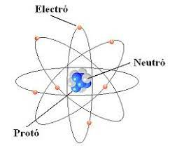
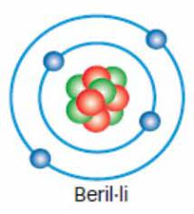

Per entendre l’electricitat, resulta útil saber algunes nocions bàsiques sobre els àtoms. Els àtoms són els maons de l’univers. Tot el que existeix està fet d’àtoms: cada estrella, cada arbre i cada animal. El cos humà està format per àtoms. L’aire i l’aigua també estan formats per àtoms. Els àtoms són tan petits que a la punta d’una agulla n'hi poden cabre milions.
El centre d’un àtom s’anomena nucli. El nucli està compost per partícules anomenades protons i neutrons. Els electrons giren al voltant del nucli en capes. Si el nucli tingués la mida d’una pilota de tennis, l’àtom seria una esfera d’uns 450 metres de diàmetre (aproximadament la grandària d’un dels estadis esportius més grans del món). Els àtoms són, en gran part, espai buit.
Si poguéssim veure un àtom, semblaria un petit grupet de boletes envoltat de bombolles gegants invisibles (o capes). Els electrons estarien a la superfície d’aquestes bombolles, girant i movent-se constantment per mantenir-se tan allunyats els uns dels altres com fos possible. Els electrons es mantenen dins les capes gràcies a una força elèctrica.
Els protons i els electrons d’un àtom s’atreuen mútuament perquè tots dos tenen càrrega elèctrica. Els protons tenen càrrega positiva (+) i els electrons, càrrega negativa (−). La càrrega positiva dels protons és igual a la càrrega negativa dels electrons. Les càrregues oposades s’atrauen. Un àtom està en equilibri quan té el mateix nombre de protons que d’electrons. Els neutrons no tenen càrrega i el seu nombre pot variar.
El nombre de protons d’un àtom determina de quin tipus d’àtom, o element, es tracta. Un element és una substància formada per un sol tipus d’àtom. La Taula Periòdica dels Elements mostra cada element amb el seu nombre atòmic —és a dir, el nombre de protons que conté. Per exemple, cada àtom d’hidrogen (H) té un protó, i cada àtom de carboni (C) en té sis.
Els electrons solen mantenir-se a una distància constant del nucli de l’àtom, distribuïts en capes precises. La capa més propera al nucli pot contenir dos electrons. La següent pot arribar a contenir-ne vuit. Les capes exteriors en poden allotjar encara més. Alguns àtoms amb molts protons poden tenir fins a set capes d’electrons.
Els electrons de les capes més properes al nucli senten una forta força d’atracció cap als protons. De vegades, però, els electrons de les capes més externes d’un àtom no estan tan fortament units als protons. Aquests electrons es poden desplaçar de la seva òrbita: si s’hi aplica una força, poden saltar d’un àtom a un altre. Aquest desplaçament d’electrons és el que anomenem electricitat.
El llamp és una forma d’electricitat: consisteix en electrons que es mouen d’un núvol a un altre o que salten d’un núvol a terra. Has notat mai una petita descàrrega quan toques un objecte després de caminar damunt d’una catifa? Un raig d’electrons t’ha saltat des d’aquell objecte. Això rep el nom d’electricitat estàtica.
Has fet mai que els cabells s’aixequin al fregar-los amb un globus? Si és així, vas arrencar alguns electrons del globus. Aquests electrons es van desplaçar del globus cap als cabells. Els electrons intenten allunyar-se els uns dels altres i, per això, es mouen cap a les puntes del cabell. Es repel·leixen (empenyen) mútuament i fan que el cabell s’aixequi. Igual que les càrregues oposades s’atrauen, les càrregues iguals es repel·leixen.